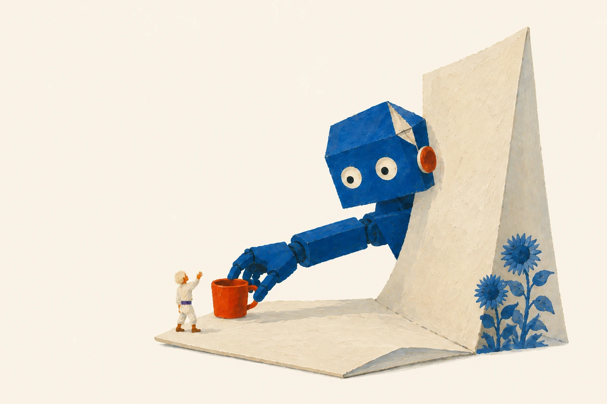
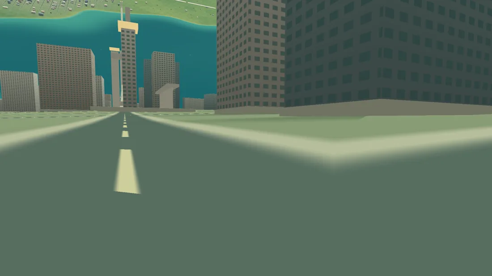

Winning by Overfitting
How an LLM in a loop with a benchmark's own evaluator won the NeurIPS 2025 EAI Challenge — and why the recipe matters for robotics.
What if the model that writes your code
also folds your laundry?

I work on AI. I’m interested in what happens when it can act in the world, how we make that go well, and what we might build with it.

One human gets one body. Software works differently. The essay asks what happens if the same frontier model can operate many robots.
That is the argument behind the first Paper Robots film.
The coming robotics revolution One model
One model
Stand on the inside of a space habitat. Look up, and the ground on the other side is above your head.
Try looking a little higher →
Step into Another Sky All three little worlds
Research notes, small worlds, and a startup that didn’t work out. The unfinished paths belong here too.
Browse all eight piecesHow an LLM in a loop with a benchmark's own evaluator won the NeurIPS 2025 EAI Challenge — and why the recipe matters for robotics.
Lessons learned from building a writing assistant for novelists that didn't make it to market.
What if Claude had a quiet life as a bee? A meditative pixel simulation made entirely with Claude Code.
Turning research papers into visual zines. Honorable Mention at the UIST Student Innovation Contest.
The essays, the films, the occasional experiment.
Free, and
sent when there’s something ready.